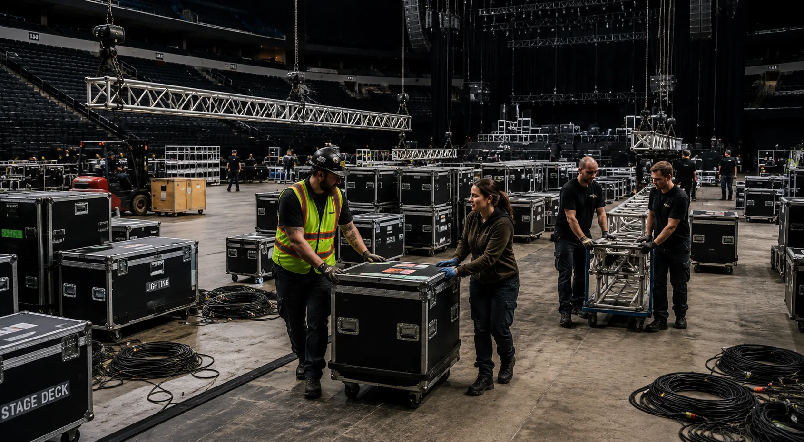

New to live production
Learn how a call works, how crews communicate, how to stay useful without crossing your authority, and where the major departments fit.
Start Learning →
Practical learning for live event workers at every stage. Start with the jobsite fundamentals, build deeper department knowledge, or jump into the lane you already work in.
You do not need to understand the whole industry or browse a giant course catalog first. Pick the route that matches your situation and the site will point you toward the useful next layer.
Learn how a call works, how crews communicate, how to stay useful without crossing your authority, and where the major departments fit.
Start Learning →Go straight to your department, systems knowledge, troubleshooting concepts, documentation, coordination, or leadership material without repeating everything you already know.
Build on Your Experience →See what the curriculum teaches, how competencies are separated from qualification, what completion means, and how safety and evidence boundaries are handled.
For Employers →The full curriculum stays available underneath the learner path. The front end reveals it when your role, experience, or question makes it relevant.
Stagehand is a strong general entry lane, not a mandatory root for every career. Lighting, audio, video, staging, production, and other roles can have their own entry and growth paths.
Call flow, load-in/load-out, crew conduct, field skills, department awareness.
Open lane → DepartmentSupport work, production flow, control relationships, documentation, deeper systems.
Open lane → DepartmentAssigned support, live audio systems, signal relationships, system design context.
Open lane → DepartmentLED build support, integrated systems, signal flow, commissioning and show context.
Open lane → DepartmentComponent support, deck systems, scenic interfaces, design and coordination context.
Open lane → DepartmentCustody, handling, presets, department systems, technician and specialist boundaries.
Open lane → CoordinationCommunication, planning, records, handoffs, responsibility and cross-department flow.
Open lane → Deep libraryRigging, power/electrical, show control, automation, venue operations, leadership, contexts, and more.
Browse mapped curriculum →The Crew Blueprint teaches recognition, system understanding, communication, decision boundaries, and job readiness. Qualification, certification, employer assignment, site rules, and hands-on authorization remain separate.
Build vocabulary, mental models, workflow understanding, hazard recognition, communication habits, troubleshooting logic, documentation awareness, and clear stop/ask/escalation decisions.
Grant employer authorization, certify a worker, replace site-specific training, substitute for qualified-person status, or turn awareness into independent authority over specialist work.
Crew Blueprint owns durable learning. Production Atlas owns current employers, public hiring routes, events, geography, labor organizations, and market information. Linking the two keeps training stable without mixing changing job-market data into lessons.
The format keeps one mental model in view at a time, uses visuals when they add understanding, keeps deeper material available without forcing it up front, and remembers your chosen route in this browser.
Choose a route, then a lane, then the next useful learning node.
Connect concepts to arenas, festivals, theatres, corporate work, shops, and other environments.
Know what to recognize, when to stop, who owns the next decision, and what training does not authorize.
Open deeper systems, sources, advanced material, and related courses when the role calls for it.